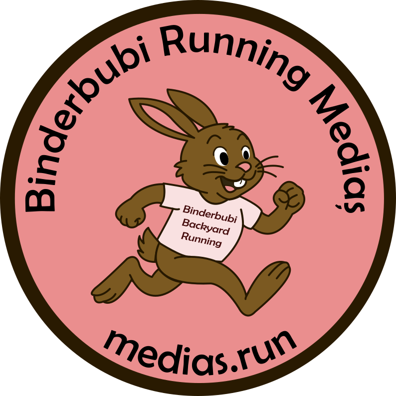
12 alergători din Mediaș. 24 de ore de efort continuu pe nisip. Un singur scop: să transformăm kilometrii în terapie.
TIMP DE ALERGARE
ALERGĂTORI MEDIAȘ
= 1 KILOMETRU
SPERANȚĂ
Între 12 și 13 septembrie, echipa Binderbubi Running Mediaș va fi pe plaja din Mamaia pentru a susține copiii cu nevoi speciale. Nu este o competiție de viteză, ci un maraton al solidarității.
Cum funcționează? Fiecare 10 LEI donați reprezintă 1 KM pe care noi îl parcurgem în numele tău pentru această cauză.
Am stabilit un obiectiv ambițios de a "vinde" 2000 de kilometri pentru a susține copiii cu autism.
Total strâns: 19.190 LEI (Obiectiv: 20.000 LEI)
*Selectează echipa Binderbubi Running Mediaș în formularul de donație.
Cei 12 alergători care transformă efortul în terapie pe nisipul de la Mamaia.
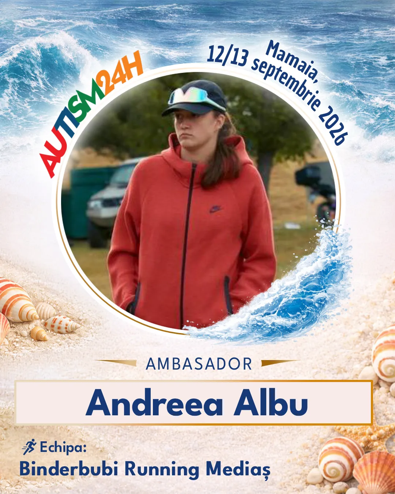
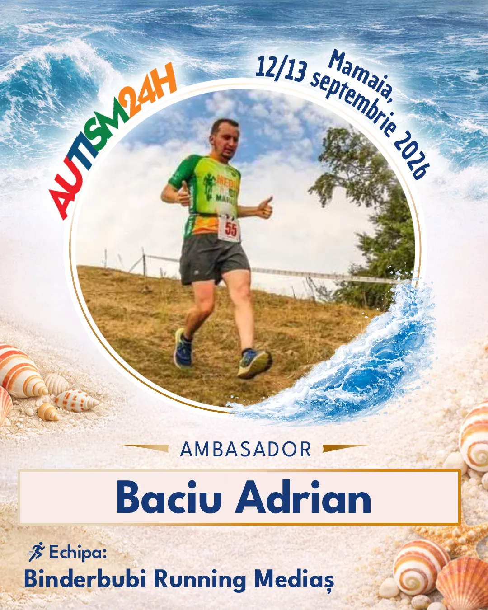
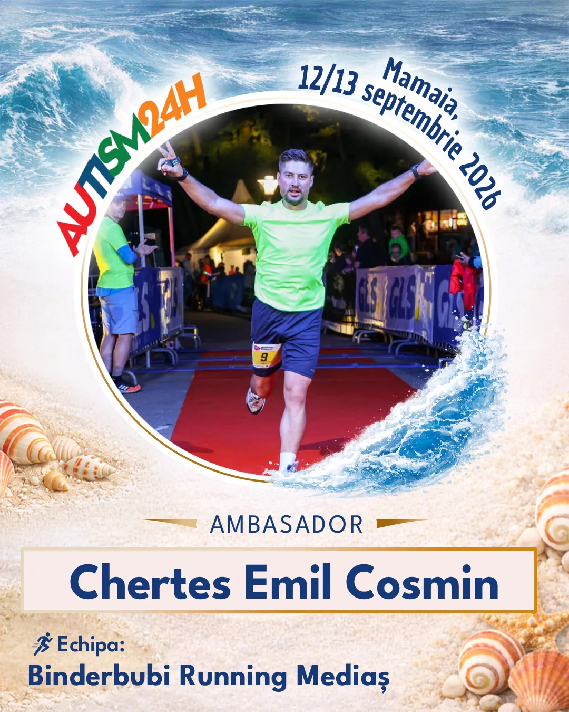
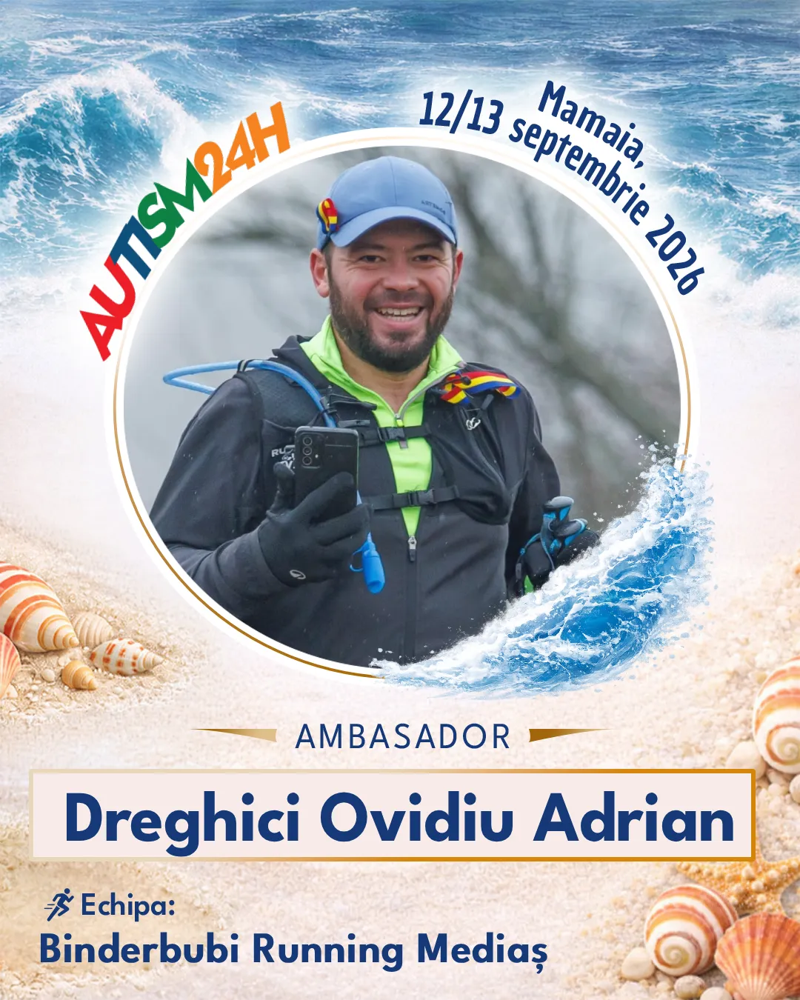
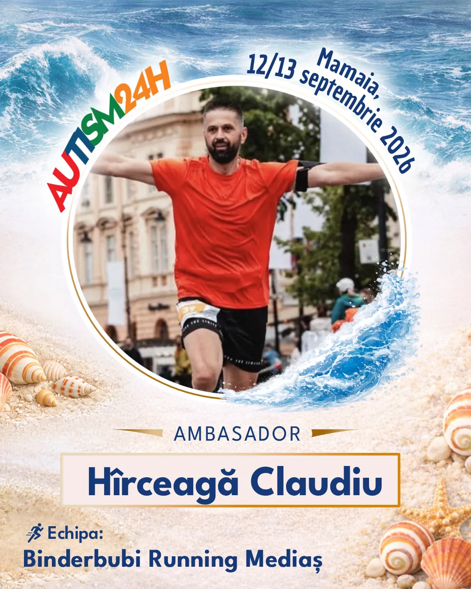
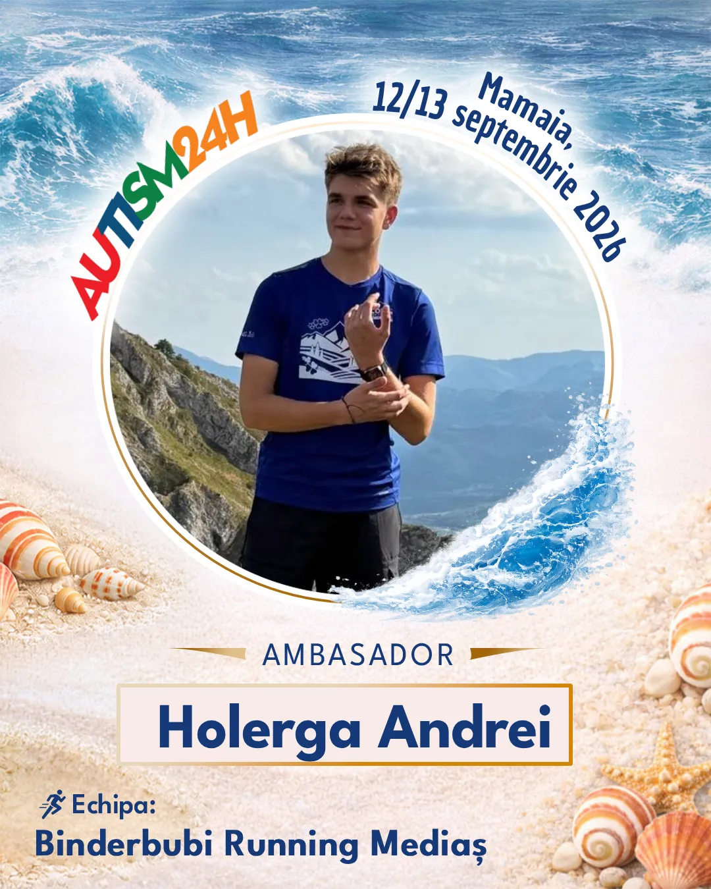
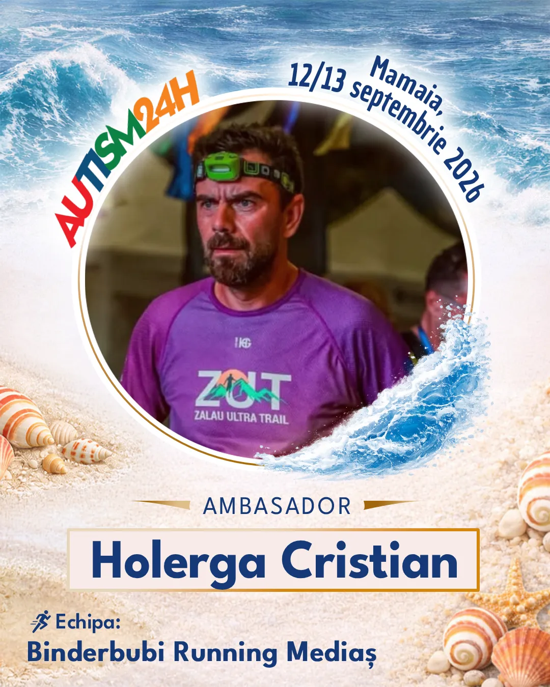
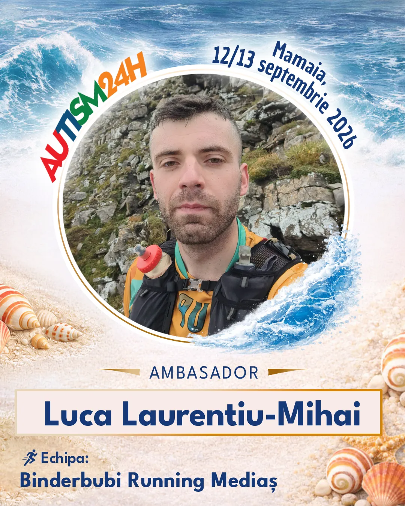
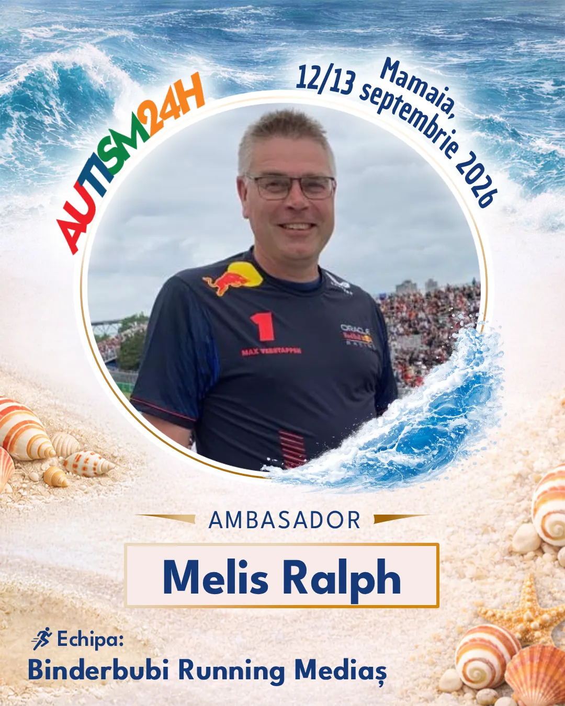
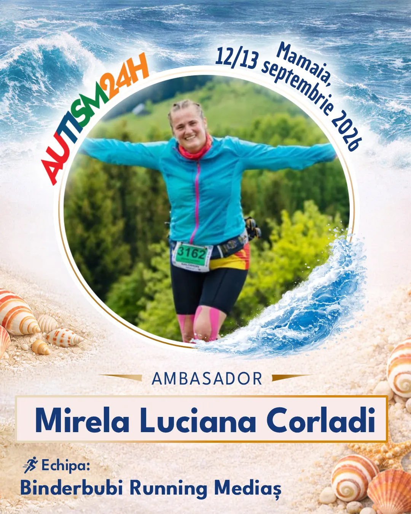
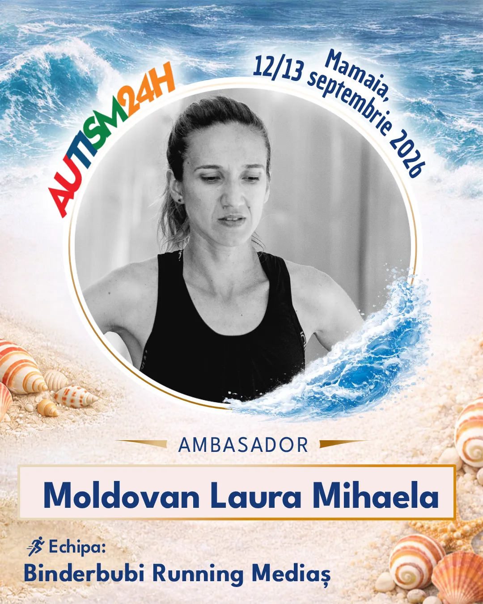
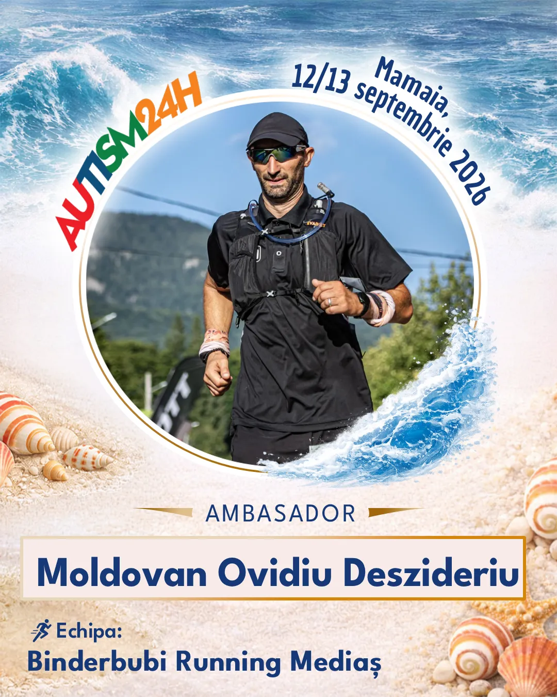
Alergam impreuna 24h, ne incurajam reciproc si ducem provocarea pana la final.
Alergarea pe nisip este de două ori mai grea, dar motivația noastră este de zece ori mai puternică.